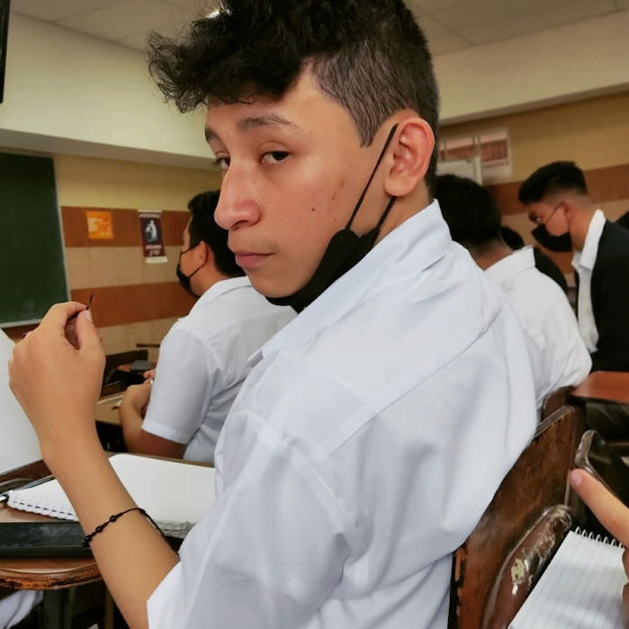

Mi nombre es Melvin Josue Herrera Muy, preferible que me llamen Josue, naci el 1 de Octubre del 2004, tengo 18 años de edad, criado por Luisa Maribel y Melvin Herrera, muchos dicen que me paresco a mi padre y tienen razon, soy basicamente su copia, lo unico diferente es que saque la personlidad de mi madre, y tambien sus gustos, la considero casi que mi mejor amiga, y `por el lado de mi padre, tengo una buena relacion con el, debido a la que mi padre trabaja casi que todo el dia, yo empece a hacer su trabajo como el hombre de la casa. Tambien tengo una hermana la cual aprecio mucho, es lo opuesto a mi, una chico muy dotada en el ambito estudiantil, con un promedio bueno en la escuela y actitud muy activa, a veces no lo demuestro pero la quiero, tambien tengo un mejor amigo, Christopher Segura, lo conozco desde niño, somos tan buenos amigos que incluso estudiamos juntos en Kinal, el en la rama de Mecanica, y yo en la Informatica, tanto como mi amigo nos unimos a Kinal con el objetivo de superarnos, tuvimos nuestros problemas en la carrera pero supimos avanzar, y esperamos poder graduarnos juntos y ser personas exitosas pero sabemos bien que requerira esfuerzo y espero que jamas nos rindamos.
